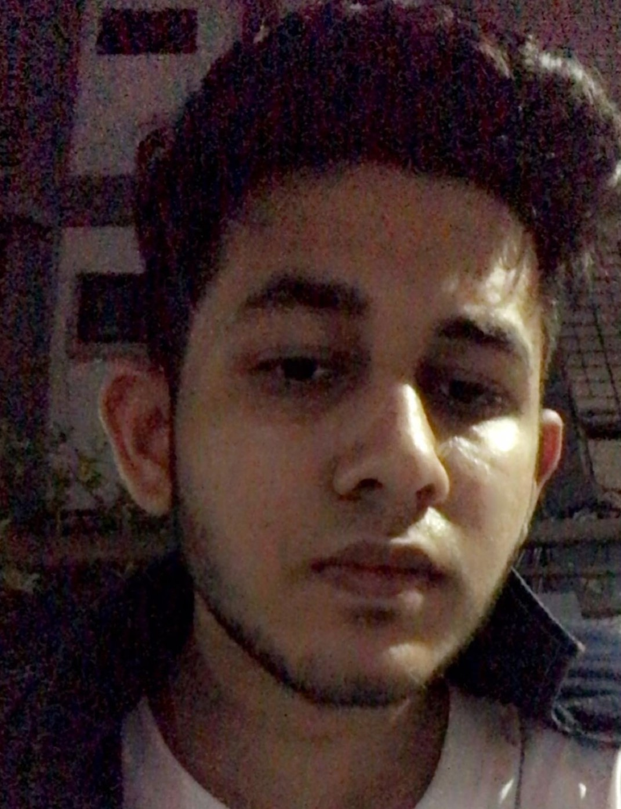

 Tahsin Masnoon Sami From Universiti Teknologi of Malaysia 3rd Year Student of Software Engineering
Objective
Enthusiastic and dedicated third-year Software Engineering student with a passion for coding and problem-solving. Seeking opportunities to apply and enhance skills in software development, teamwork, and project management.
Education
Bachelor of Software Engineering[Graduation year 2026]
Universiti Teknologi of Malaysia,Kuala Lumpure,Malaysia.